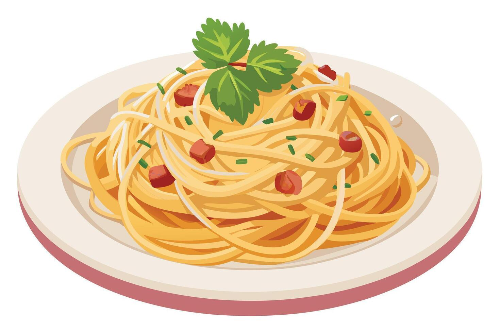

This is a picture of illustrated Carbonara.
Batons - Cut the guanciale into thick batons.
Biting through the golden brown crust into meaty bits of salty guanciale is part of the awesomeness that is carbonara!
Finely grate the parmigiana reggiano or pecorino. I use a microplane – one of can’t-live-without kitchenware items!
Sauce – Whisk together the egg, cheese and pepper in a large bowl.
It needs to be a large bowl because the pasta will be stirred into the sauce in the bowl, off the stove, to avoid scrambling the eggs.
Cook pasta – Bring 4 litres (4 quarts) of water to the boil with 1 tablespoon of salt.
Cook the pasta per packet directions. It should be firm, not soft, but fully cooked through.
Reserve pasta cooking water – Just before draining, scoop out one cup of pasta cooking water. Then drain the pasta in a colander.
Cook guanciale until golden while the pasta is cooking. You don’t need any oil, the guanciale will fry in its own fat.
Toss pasta in guanciale – Tumble the hot pasta into the pan with the guanciale then toss so the pasta gets coated in the guanciale fat.
Transfer into sauce bowl – Tip the hot pasta into the bowl with the egg and use a rubber spatula to scrape out every drop of the guanciale fat into the bowl.
That stuff is gold!
Add 1/2 cup pasta cooking water into the bowl.
Mix vigorously with the handle of a wooden spoon, spinning the pasta around, for around 30 seconds to 1 minute.
Watch as the watery pale yellow liquid magically transforms into a creamy sauce.
Serve immediately in warm bowls. Pasta waits for no one!